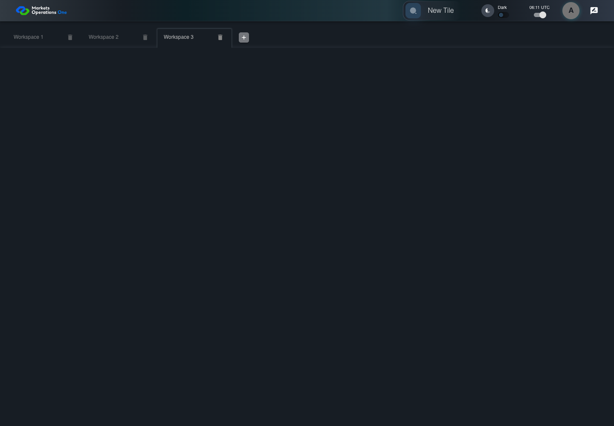
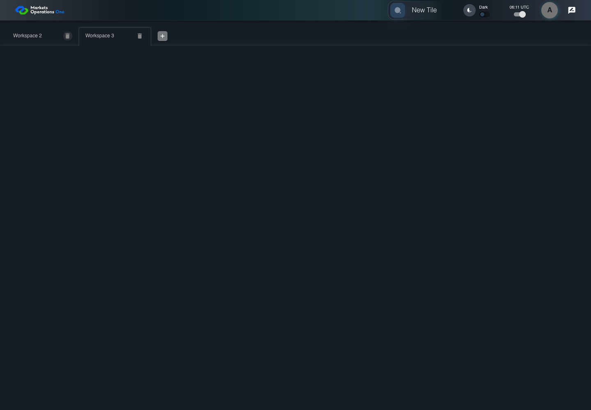

UI-SHL-014 remove an earlier tab and retain selected workspace
PASS · application/run-050/ui-shl-014-remove-an-earlier-tab-and-retain-selected-workspace-94407178ad86-attempt-1 · ACTUAL_APPLICATION_LOCAL_SERVICES
Actual current React shell and browser storage. Controlled login/validation/activity renewal, UI-USER-01 permissions, catalog, and SystemJS React component. Markers, counter, and registered refresh callback are controlled fixture observations. No real business tenant or BFF authorization acceptance.
2026-10-22T06:11:03.436Z to 2026-10-22T06:11:05.897Z
Assertions and result · Artifact manifest · Exact run inputs and source hashes
Result SHA-256:7bb0be6c64bf476c1a2dedb53016d7a0510f3ce630a5f6a9d74db0653d5ea968Screenshot capture: CAPTURED. Named frames: 7.
Step screenshot bindings: COMPLETE. 6/6 canonical steps have execution screenshots.
Bindings measure structural coverage only. They do not establish screenshot content quality or relevance.
Screenshot content review: NOT_REVIEWED. Recorded context: 0/7 frames. Identical image bytes: 2 repeated frames. Recorded context does not establish human visual review.
Canonical step timeline
Given User A is authenticated as fixture UI-USER-01 with the case-specific permissions
Execution: PASSED.
1. step-01 Visible state after step 1: Given User A is authenticated as fixture UI-USER-01 with the case-specific permissions
2026-10-22T06:11:04.574Z · 1440×1000
Step: /Users/lushevol/code/github/ratan-release-impact/workbench/tasks/ui-test-coverage-20261022/test-cases.md:5810
SHA-256:27188d60d57043ea1a65e02ed01bce5f48b37b3016806dad77e343f43ef36206And W1, W2, and W3 exist and W3 is selected
Execution: PASSED.
2. step-02 Visible state after step 2: And W1, W2, and W3 exist and W3 is selected
2026-10-22T06:11:04.736Z · 1440×1000
Step: /Users/lushevol/code/github/ratan-release-impact/workbench/tasks/ui-test-coverage-20261022/test-cases.md:5811
SHA-256:c2fd8ab30a9b699d18d5b9a9535256b27b361b0daf222df17bee6da9337cc0abWhen User A clicks icon button named "delete" inside the W1 workspace tab
Execution: PASSED.
3. step-03 Visible state after step 3: When User A clicks icon button named "delete" inside the W1 workspace tab
2026-10-22T06:11:04.851Z · 1440×1000
Step: /Users/lushevol/code/github/ratan-release-impact/workbench/tasks/ui-test-coverage-20261022/test-cases.md:5812
SHA-256:012338ff4a25edbeab884704dc233e8a745ecf432dd339ed81651f4c894770abThen tab with source identity "Workspace Name textbox value Workspace 1" inside the shell tablist named "workspaces" is absent
Execution: PASSED.
4. step-04 Visible state after step 4: Then tab with source identity "Workspace Name textbox value Workspace 1" inside the shell tablist named "workspaces" is absent
2026-10-22T06:11:04.943Z · 1440×1000
Step: /Users/lushevol/code/github/ratan-release-impact/workbench/tasks/ui-test-coverage-20261022/test-cases.md:5813
SHA-256:012338ff4a25edbeab884704dc233e8a745ecf432dd339ed81651f4c894770abImage bytes match frame 3. An unchanged image can be valid for consecutive assertions. This match does not establish correct step content.
And tab with source identity "Workspace Name textbox value Workspace 3" inside the shell tablist named "workspaces" is selected
Execution: PASSED.5. step-05 Visible state after step 5: And tab with source identity "Workspace Name textbox value Workspace 3" inside the shell tablist named "workspaces" is selected
2026-10-22T06:11:05.018Z · 1440×1000
Step: /Users/lushevol/code/github/ratan-release-impact/workbench/tasks/ui-test-coverage-20261022/test-cases.md:5814
SHA-256:c3b2ad55877276c24032b45b2d091e8890f7312203bac62ad7ad6f1c5e8cc6a3And text with text "Panel Three" inside the selected W3 tabpanel is visible
Execution: PASSED.6. step-06 Visible state after step 6: And text with text "Panel Three" inside the selected W3 tabpanel is visible
2026-10-22T06:11:05.365Z · 1440×1000
Step: /Users/lushevol/code/github/ratan-release-impact/workbench/tasks/ui-test-coverage-20261022/test-cases.md:5815
SHA-256:3f8ea7a6d4e3f701f02c76a177de908ea8d5e44cf26a9ee83b540249251bb484
Additional named frames

The final visible state after the named test assertions.
2026-10-22T06:11:05.499Z · 1440×1000Step: Test source: /Users/lushevol/code/github/ratan-release-impact/workbench/e2e/audit-specs/shell-expanded.spec.ts:65
SHA-256:
3f8ea7a6d4e3f701f02c76a177de908ea8d5e44cf26a9ee83b540249251bb484Image bytes match frame 6. An unchanged image can be valid for consecutive assertions. This match does not establish correct step content.
Screenshots establish visible state only. Assertions and traces support functional claims.